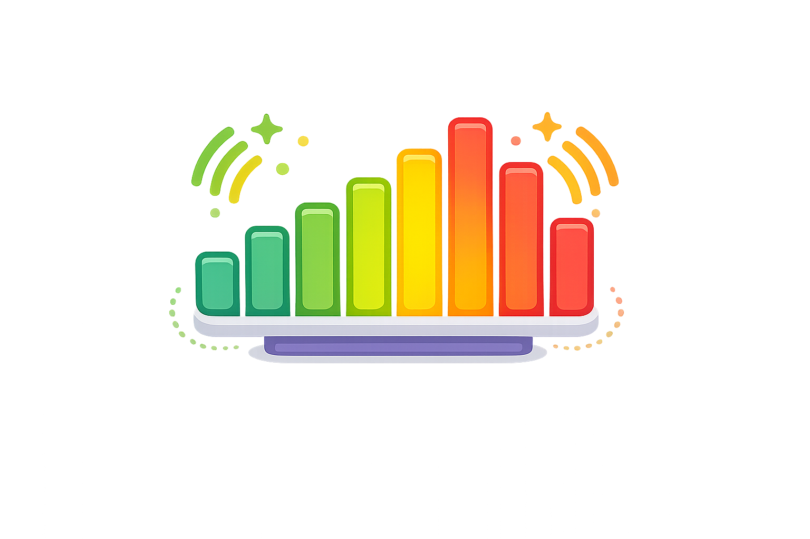

Medidor de Ruido
Monitorea el nivel de ruido del aula en tiempo real y ayuda a los estudiantes a mantener un volumen adecuado durante las actividades.
🎤
Esperando acceso al micrófono...
0%
🟢 Silencioso
🟡 Subiendo el volumen
🔴 Demasiado ruido
Consejo: muestra esta herramienta en una pantalla del aula para que los estudiantes puedan monitorear y regular su propio nivel de ruido durante las actividades.